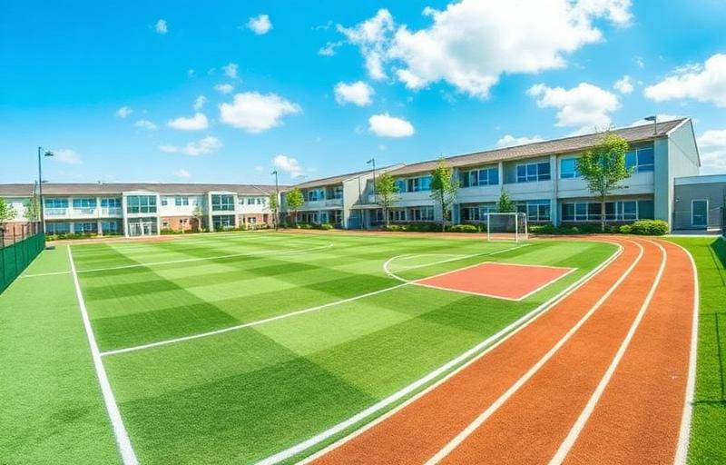

Nuestra Infraestructura
Espacios diseñados para inspirar el aprendizaje y el desarrollo integral
Aulas Modernas
Espacios amplios, climatizados y equipados con pizarras interactivas y mobiliario ergonómico.
Laboratorios
Laboratorios de ciencias, robótica y computación con equipamiento de última generación.

Complejo Deportivo
Cancha de fútbol, piscina semi-olímpica, coliseo multiusos y áreas de recreación.
Biblioteca
Centro de recursos con más de 5,000 títulos, zona digital y espacios de estudio grupal.
Centro de Cómputo
Salas equipadas con computadoras de última generación y acceso a internet de alta velocidad.
Áreas Verdes
Amplios jardines y espacios al aire libre para actividades recreativas y pedagógicas.